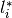
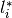

forward_backward_pd¶
- odl.solvers.nonsmooth.forward_backward.forward_backward_pd(x, f, g, L, h, tau, sigma, niter, callback=None, **kwargs)[source]¶
The forward-backward primal-dual splitting algorithm.
The algorithm minimizes the sum of several convex functionals composed with linear operators:
min_x f(x) + sum_i g_i(L_i x) + h(x)
where
f,g_iare convex functionals,L_iare linear operators, andhis a convex and differentiable functional.The method can also be used to solve the more general problem:
min_x f(x) + sum_i (g_i @ l_i)(L_i x) + h(x)
where
l_iare strongly convex functionals and @ is the infimal convolution:(g @ l)(x) = inf_y { g(y) + l(x-y) }
Note that the strong convexity of
l_imakes the convex conjugatel_i^*differentiable; see the Notes section for more information on this.- Parameters:
- x
LinearSpaceElement Initial point, updated in-place.
- f
Functional The functional
f. Needs to havef.proximal.- gsequence of
Functional's The functionals
g_i. Needs to haveg_i.convex_conj.proximal.- Lsequence of
Operator's' Sequence of linear operators
L_i, with as many elements asg.- h
Functional The functional
h. Needs to haveh.gradient.- taufloat
Step size-like parameter for
f.- sigmasequence of floats
Sequence of step size-like parameters for the sequence
g.- niterint
Number of iterations.
- callbackcallable, optional
Function called with the current iterate after each iteration.
- x
- Other Parameters:
- lsequence of
Functional's, optional The functionals
l_i. Needs to haveg_i.convex_conj.gradient. If omitted, the simpler problem withoutl_iwill be considered.
- lsequence of
See also
odl.solvers.nonsmooth.primal_dual_hybrid_gradient.pdhgSolver for similar problems without differentiability in any of the terms.
odl.solvers.nonsmooth.douglas_rachford.douglas_rachford_pdSolver for similar problems without differentiability in any of the terms.
Notes
The mathematical problem to solve is
where
 ,
,  ,
,  and
and  are functionals and
are functionals and
 are linear operators. The infimal convolution
is defined by
are linear operators. The infimal convolution
is defined byThe exact conditions on the involved functionals are as follows:
and are proper, convex and lower semicontinuous, and
is convex and differentiable with -Lipschitz continuous
gradient, .The optional operators
 need to be
-Lipschitz continuous. Note that in the paper, the condition
is formulated as being proper, lower
semicontinuous, and -strongly convex, which implies that
 have -Lipschitz continuous gradients.
need to be
-Lipschitz continuous. Note that in the paper, the condition
is formulated as being proper, lower
semicontinuous, and -strongly convex, which implies that
 have -Lipschitz continuous gradients.If the optional operators
are omitted, the simpler
problem without will be considered. Mathematically, this is
done by taking to be the functionals that are zero only in the
zero element and  otherwise. This gives that
are the zero functionals, and hence the corresponding gradients are the
zero operators.
otherwise. This gives that
are the zero functionals, and hence the corresponding gradients are the
zero operators.To guarantee convergence, the parameters
 ,
,  and
need to satisfy
and
need to satisfywhere, if the simpler problem is considered, all can be considered to be
.For reference on the forward-backward primal-dual algorithm, see [BC2015].
For more on proximal operators and algorithms see [PB2014].
References
[BC2015] Bot, R I, and Csetnek, E R. On the convergence rate of a forward-backward type primal-dual splitting algorithm for convex optimization problems. Optimization, 64.1 (2015), pp 5--23.
[PB2014] Parikh, N, and Boyd, S. Proximal Algorithms. Foundations and Trends in Optimization, 1 (2014), pp 127-239.